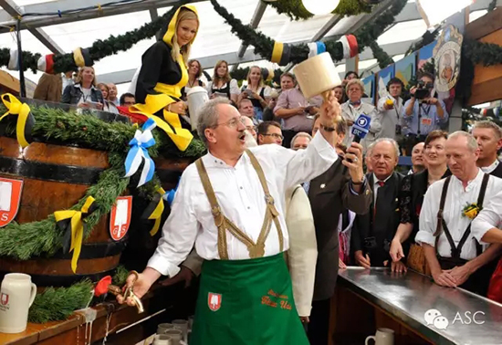
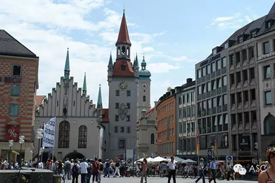
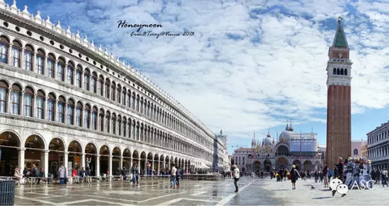
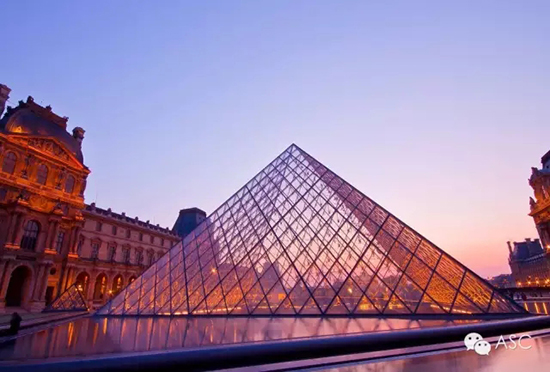
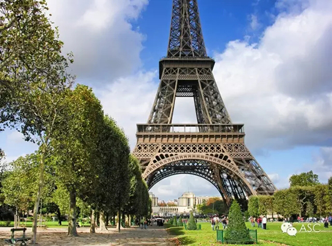
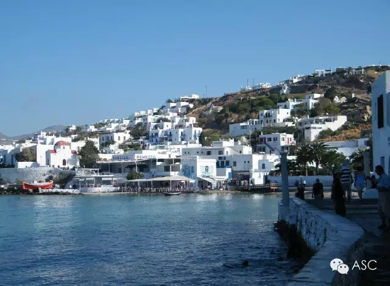

互惠动态
|
|
世界这么大，你看过多少？
提示：点击上方"ASC"↑免费订阅本刊
1慕尼黑


有印象吗？著名的慕尼黑会议就是在这个地方哦，是不是多了几丝神秘的感觉，他虽然和别的地方不一样，而且还是尊贵的皇家地点，可是你不要被他的表面所迷惑哦，她也是很具有豪放风格的豪放派呢！除此之外，这可是一个时尚与保守，更新与复古 “友好”地并存着的城市呢！
你喜欢足球吗？来这里最不能错过的就是拜仁球赛哦，在这片热土上激情的挥洒着充满动力的汗水，这个国家对于足球的热情，你据对不会猜到到底有多少！
除了比赛之外，这里还有很吸引人的啤酒节哦，这里的狂欢的节目主打的就是啤酒哦，也就是说其他的娱乐节目都是辅助的，这样的节日是不是有点颠覆你的思维呢？
2佛罗伦萨

佛罗伦斯是意大利中部的一个城市，是著名的文化古城和艺术天堂。十五至十六世纪时佛罗伦萨是欧洲最著名的艺术中心，以美术工艺品和纺织品驰名全欧，也是文艺复兴运动的发祥地。佛罗伦萨给现代人留下了数不胜数的历史记忆。
看过《花儿与少年》第一集的小伙伴们，印象最深的莫过于圣母百花大教堂了，它是佛罗伦萨的地标，又称"圣母寺"。爬了1000多级台阶，只想说爬到吐血也值啊。
另外值得一提的便是水城威尼斯了，而这里的中心便要数圣马可广场了，这里一直是威尼斯的政治、宗教和传统节日的公共活动中心。广场为纪念耶酥十二圣徒和收藏战利品而建，四周围绕的都是文艺复兴时期的精美建筑， 包括公爵府、圣马可大教堂、圣马可钟楼、新旧行政官邸大楼和连接两大楼的拿破仑翼大楼等等。广场四周还有许多商店和咖啡厅，是威尼斯闲逛、休息的最佳场所！
3巴黎


如果你要去巴黎，卢浮宫是必去无疑的。卢浮宫始建于1204年，这座城堡经历多次扩建，收集了来自世界各地的大量艺术珍品，在法国大革命后改为博物馆，与伦敦大英博物馆、纽约大都会博物馆并称为世界三大博物馆如今卢浮宫馆藏多达40万件，涵盖古埃及、近东及中东古文明、古希腊和古罗马的艺术品，诞生于七世纪的伊斯兰艺术，还有从中世纪到十九世纪中叶的西方艺术等各种稀世珍宝。 博物馆平时展出的藏品仅为总量的10%左右，却足以令人大饱眼福。而镇宫之宝当数众所周知的《蒙娜丽莎》。
另外值得一提的那当然是巴黎的地标：埃菲尔铁塔。埃菲尔铁塔是巴黎最高的建筑物，也是法国的一个文化象征。铁塔建造之初是为了迎接世界博览会及纪念法国大革命100周年。铁塔以设计师法国著名建筑工程师埃菲尔的名字命名，并在北边的塔脚下为埃菲尔塑了一座半身铜像。一个世纪以来，每年都有几百万人登临塔顶，俯瞰巴黎市容，叹为观止。
4地中海

有没有人跟你说过：心情不好的时候们就去看看海吧！地中海，因介于亚、欧、非三大洲之间而得名。是世界上最古老的海，历史比大西洋还要古老，不仅是西方欧洲文明的摇篮，现代民主的滥觞。
ASC视角
shijiao
这世界并非不好，不过是因为我们未曾见过好的罢了。看来这么多国外的风景，你是不是也有种向洋哥哥洋姐姐展示我们中国风采的冲动呢？赶快行动起来吧，把洋哥哥洋姐姐带回家，说英语，看世界！

ASC国际互惠生项目公众号ASCCENTER
互惠生最早起源于英、法、德国等自发的青年活动，是指给来自全世界的青年提供一个寄住在他国家庭里体验文化学习语言的机会，如今我们把国外互惠生请来家庭里，照顾自家的孩子，从小培养外文的语言环境，为孩子出国，全家移民打下优良基础，关注个【公众微信号】ASCCENTER了解更多国外有趣资讯。
ASC国际互惠生客服号ASC-CENTER
24小时客服个人微信号，对接家庭与互惠生之间的问题，对互惠生项目有陌生不熟悉或者想了解更多信息的可以关注【个人微信号】ASC-CENTER与客服详细交流。